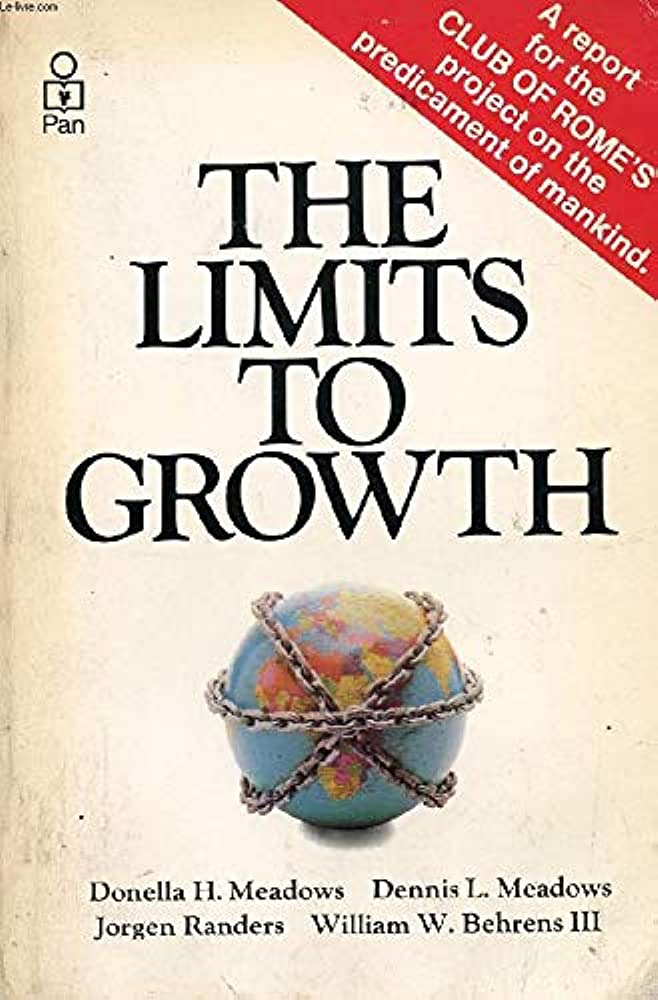

Donella Meadows
Es una científica ambiental, maestra y escritora estadounidense. Fue una pionera del análisis ambiental y social. Experta en dinámica de sistemas, es una de las pensadoras ecologistas más importantes del siglo XX. Es la autora del bestseller internacional "Los límites del crecimiento" (1972), el cual muestra las consecuencias del crecimiento descontrolado en un planeta finito.
TRABAJOS DE DONELLA

LOS LÍMITES DEL CRECIMIENTO: Durante 1972 se encontraba trabajando en el MIT, en ese tiempo Donatella dirigió a unel libro “Los límites del crecimiento”. La tesis principal del libro es que, «en un planeta limitado, las dinámicas de crecimiento exponencial (población y producto per cápita) no son sostenibles». Así, el planeta pone límites al crecimiento. Este relevante libro dio inicio a un interesante debate sobre los límites en nuestro planeta.
SUSTAINABILITY INSTITUTE: En 1996 Meadows fundó el ahora llamado Academy for Systems Change con la misión de fomentar la transición a sistemas sostenibles en todos los niveles de la sociedad, desde lo local a lo global. Analizó rigurosamente los sistemas que producen los complejos problemas que enfrenta la humanidad, y describió lo que se necesitaba hacer para crear alternativas funcionales saludables.